Cap 1 Gráfico de Pizza
Definição: O gráfico de pizza (de setores) é um diagrama circular onde os valores de cada categoria representada são proporcionais às frequências (fatia da pizza).
Para que serve: O gráfico de pizza é uma maneira de resumir a informação de uma variável qualitativa/categórica. Serve para comparar quantidades em cada categoria.
Uma variável é chamada qualitativa, também conhecida como categórica, se seus valores pertencem a uma coleção de classes não superpostas. Exemplos comuns incluem notas de letra de estudante (A, B, C, D ou F), classificação de algo (Baixo, médio ou alto), Sexo (Feminino ou Masculino).
Os tutoriais desta seção são baseados em um banco de dados interno do R chamado mtcars. Consiste em uma coleção de informações sobre 32 carros.
data(mtcars)
mtcars <- within(mtcars, {
am <- factor(am, labels=c('Automático','Manual'))
})
mtcars <- within(mtcars, {
vs <- factor(vs, labels=c('Não','Sim'))
})
par(bg="#fdf6e3")
par(mfrow=c(1,2),bg="#F2F2F2")
contagem = table(mtcars$am)
nomes = levels(mtcars$am)
porcent = round(contagem/sum(contagem)*100,2)
rotulo=paste(nomes," (",porcent,"%",")",sep="")
pie(table(mtcars$am),labels=rotulo, main="Tipo de marcha", col=c("red","blue"), cex.label=0.5)
contagem2 = table(mtcars$vs)
nomes2 = levels(mtcars$vs)
porcent2 = round(contagem2/sum(contagem2)*100,2)
rotulo2=paste(nomes2," (",porcent2,"%",")",sep="")
pie(table(mtcars$vs),labels=rotulo2, main="Tipo", col=c("#003154","#dd4a37"))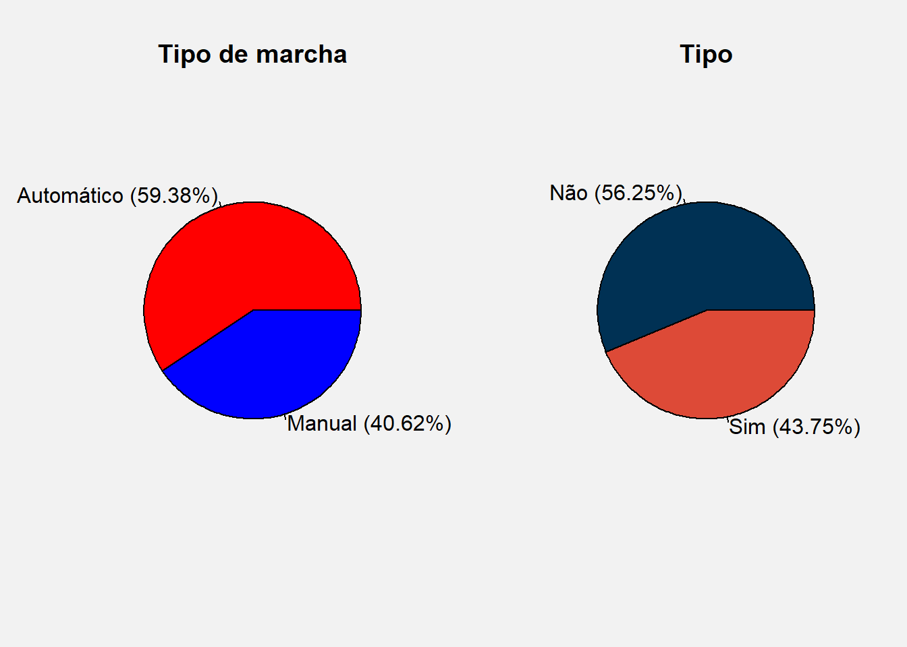
1.1 Pizza 3D
library(RColorBrewer)
par(bg="#F2F2F2")
#display.brewer.all()
COR<-brewer.pal(4,"Dark2")
#COR
library(plotrix)
pieval<-c(0.1,0.15,0.25,0.5)
pielabels<-
c("A gente odeia\n Pizza","Fazemos oposição\n às Pizzas","Não me importo\n com Pizza","Eu AMO pizza")
pielabels2=paste(pielabels,"\n",pieval,sep="")
pie3D(pieval,radius=0.95,labels=pielabels2,explode=0.1,main="Opinião sobre a Pizza em 3D",
col=COR, labelcex=0.8)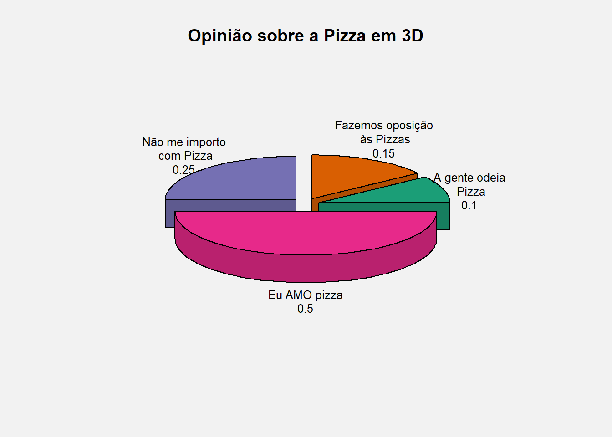
par(mfrow=c(1,2),bg="#fdf6e3")
pie3D(table(mtcars$am),labels=rotulo,radius=0.9,explode=0.2, main="Pizza 3D do Tipo de marcha", col=c("red","blue"))
pie3D(table(mtcars$vs),labels=rotulo2, main="Pizza 3D do Tipo", col=c("#003154","#dd4a37"))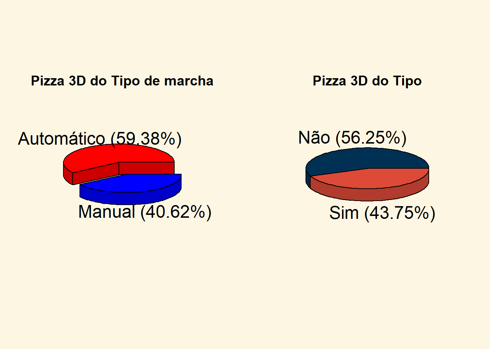
1.2 Pizza no ggplot2
library(ggplot2)
pizza<-ggplot(mtcars, aes(x=factor(1), fill=am))+
geom_bar(width = 1)+
coord_polar("y")
pizza+ theme(plot.background = element_rect(fill = "#e2ded3", colour = "#e2ded3"))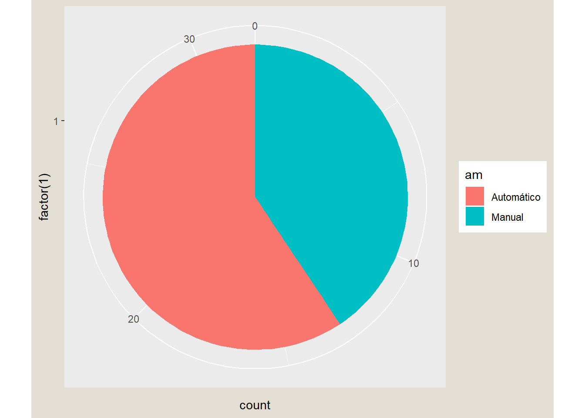
1.3 Modificação da pizza no ggplot2
dados = data.frame(round(contagem/sum(contagem)*100,2))
dados <- within(dados, {
Var1 <- factor(Var1, labels=c('Automático','Manual'))
})
attach(dados)
dados <- dados[order(Freq),]
detach(dados)
blank_theme <- theme_minimal()+
theme(
axis.title.x = element_blank(),
axis.title.y = element_blank(),
panel.border = element_blank(),
panel.grid=element_blank(),
axis.ticks = element_blank(),
plot.title=element_text(size=14, face="bold")
)
library(scales)
pizza<-ggplot(dados, aes(x="", y=Freq, fill=Var1))+
geom_bar(width = 1, stat = "identity")+
coord_polar("y")
pizza + scale_fill_brewer(palette="Dark2") + blank_theme +
theme(axis.text.x=element_blank()) +
geom_text(aes(y = Freq/2 + c(0, cumsum(Freq)[-length(Freq)]),
label = percent(Freq/100)), data = dados, size=5)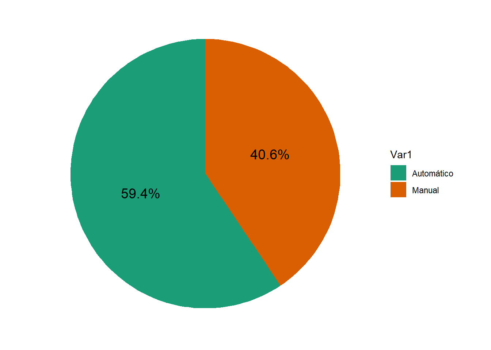
library("ggthemes")
pizza+ scale_fill_brewer(palette="Dark2") + theme_economist() +
geom_text(aes(y = Freq/2 + c(0, cumsum(Freq)[-length(Freq)]),
label = percent(Freq/100)), size=5)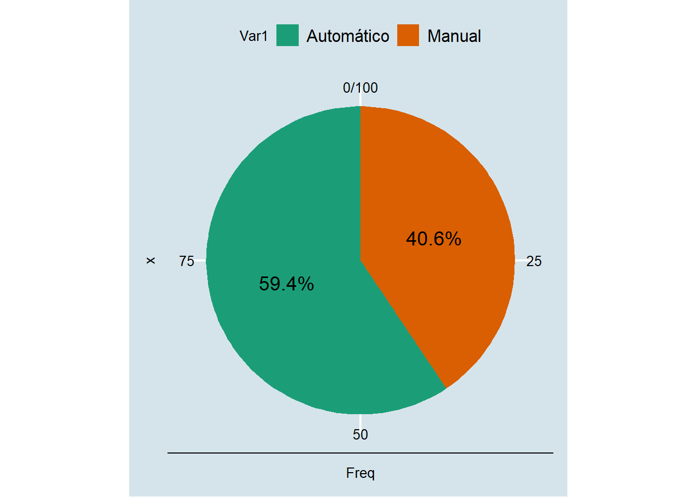
1.4 Alternativas ao Gráfico de Pizza
1.5 Gráfico de Doughnut
1.5.0.1 (Doughnutplot, Ring plot, Donut plot.)
library(broom)
library(tidyverse)
dat = data.frame(count=c(10,60,20,50),
ring=c("A", "A","B","B"),
category=c("C","D","C","D"))
# registro do p-valor
cs.pvalue <- dat %>% spread(value = count,key=category) %>%
ungroup() %>% select(-ring) %>%
chisq.test() %>% tidy()
cs.pvalue <- dat %>% spread(value = count,key=category) %>%
select(-ring) %>%
fisher.test() %>% tidy() %>% full_join(cs.pvalue)
# registro das frações
#dat = dat[order(dat$count), ]
dat %<>% group_by(ring) %>% mutate(fraction = count / sum(count),
ymax = cumsum(fraction),
ymin = c(0,ymax[1:length(ymax)-1]))
# Limite de X
baseNum <- 4
#numCat <- length(unique(dat$ring))
dat$xmax <- as.numeric(dat$ring) + baseNum
dat$xmin = dat$xmax -1
# Gráfico Doughnut
p2 = ggplot(dat, aes(fill=category, alpha = ring,
ymax=ymax,ymin=ymin,xmax=xmax,xmin=xmin)) +
geom_rect(colour="grey30") +
coord_polar(theta="y") +
geom_text(inherit.aes = F,
x=c(-1,1),y=0,
data = cs.pvalue,aes(label = paste(method,
"\n", format(p.value,scientific = T,digits = 2))))+
xlim(c(0, 6)) +
theme_bw() +
theme(panel.grid=element_blank()) +
theme(axis.text=element_blank()) +
theme(axis.ticks=element_blank(),
panel.border = element_blank()) +
labs(title="Gráfico Doughnut") +
scale_fill_brewer(palette = "Set1") +
scale_alpha_discrete(range = c(0.5,0.9))
p2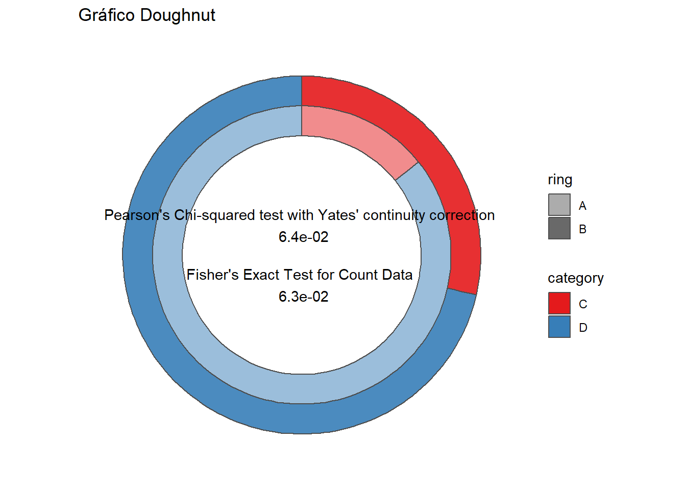
1.6 Nightingale Rose Chart
pie1<-c(3,6,5,4,7,8,9,1,4)
pie2<-list(0:3,1:6,2:5,1:4,0:7,4:8,2:9,0:1,0:4)
pie3<-sample(10:60,36)
pie4<-list(sort(sample(1:60,8)))
for(sector in 2:36) pie4[[sector]]<-sort(sample(1:60,8))
par(radial.pie(pie1,labels=LETTERS[1:9]))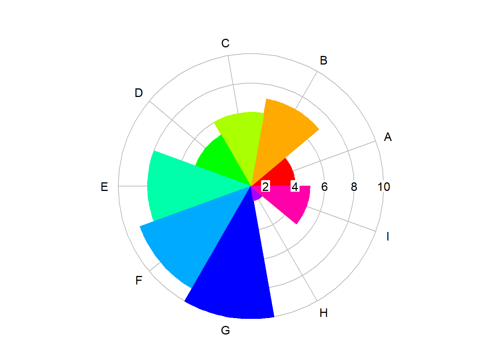
1.7 Gráficos do tipo ventilador “Fanplot”.
library(plotrix)
iucn.df<-data.frame(area=c("África","Ásia","Europa","América do Norte",
"América do Sul","Oceania"),threatened=c(5994,7737,1987,4716,5097,2093))
fan.plot(iucn.df$threatened,max.span=pi,
labels=paste(iucn.df$area,iucn.df$threatened,sep="-"),
main="Espécies ameaçadas por continente (fan.plot)",ticks=276)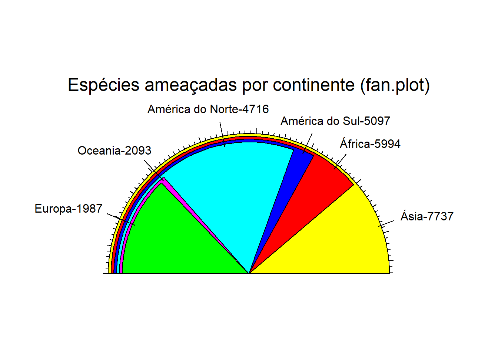
1.8 Gráficos do tipo Visualização em círculo “Circle Visualisation”.
library(packcircles)
library(ggplot2)
continente <- circleProgressiveLayout(iucn.df)
dat1 <- circleLayoutVertices(continente)
ggplot(data = dat1) +
geom_polygon(aes(x, y, group = id, fill = factor(id)),
colour = "black",
show.legend = FALSE) +
scale_fill_manual(values = iucn.df$area) +
scale_y_reverse() +
coord_equal()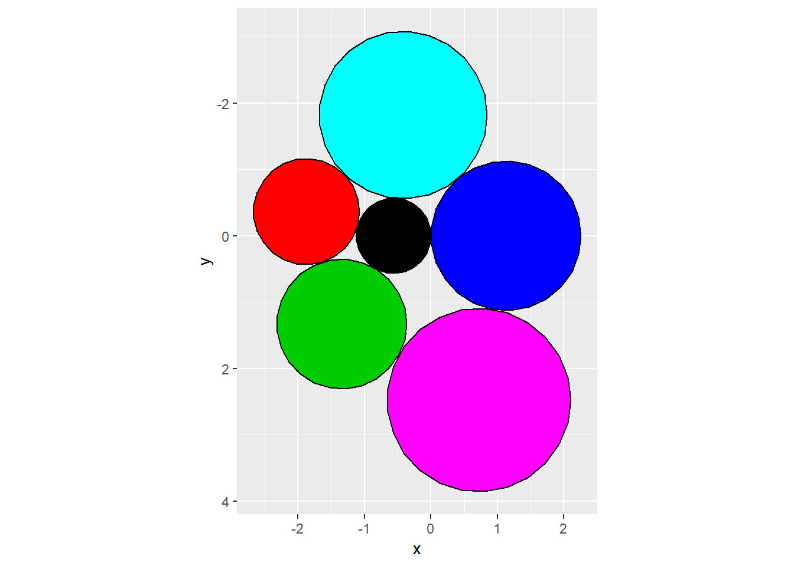
#########################################################################################
library(RColorBrewer)
#display.brewer.all()
COR6<-brewer.pal(6,"YlGnBu")
#devtools::install_github("jcheng5/bubbles")
library(bubbles)
bubbles(value = iucn.df$threatened,
color = COR6,
label = iucn.df$area,
width=800, height=800) #########################################################################################
t <- theme_bw() +
theme(panel.grid = element_blank(),
axis.text=element_blank(),
axis.ticks=element_blank(),
axis.title=element_blank())
theme_set(t)
# circle areas
areas <- 1:1000
# arrange circles from small to large
packing1 <- circleProgressiveLayout(areas)
dat1 <- circleLayoutVertices(packing1)
# arrange same circles from large to small
packing2 <- circleProgressiveLayout( rev(areas) )
dat2 <- circleLayoutVertices(packing2)
dat <- rbind(
cbind(dat1, set = 1),
cbind(dat2, set = 2) )
ggplot(data = dat, aes(x, y)) +
geom_polygon(aes(group = id, fill = -id),
colour = "black", show.legend = FALSE) +
scale_fill_distiller(palette = "RdGy") +
coord_equal() +
facet_wrap(~set,
labeller = as_labeller(
c('1' = "small circles first",
'2' = "big circles first"))
)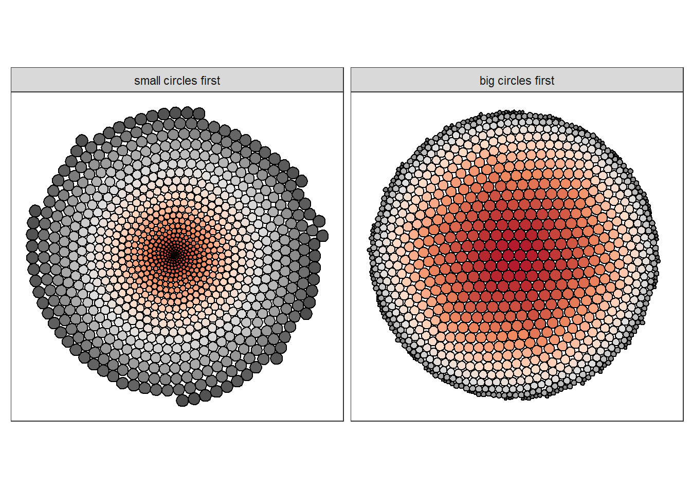